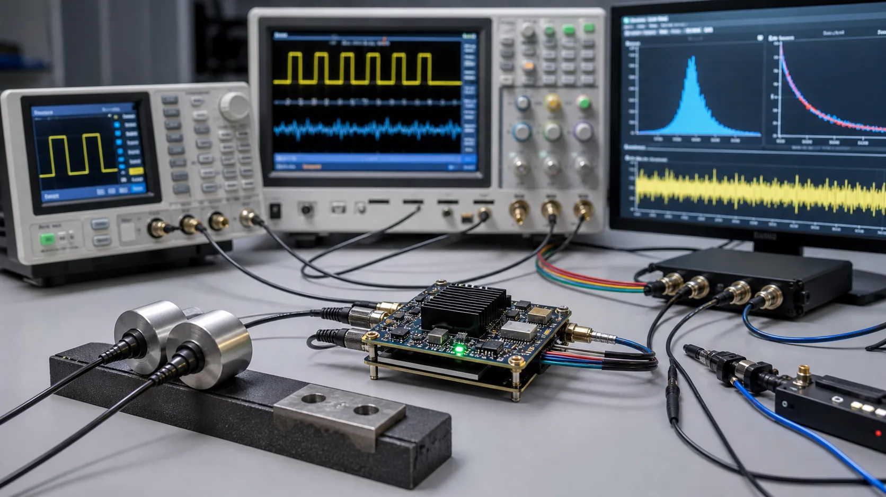
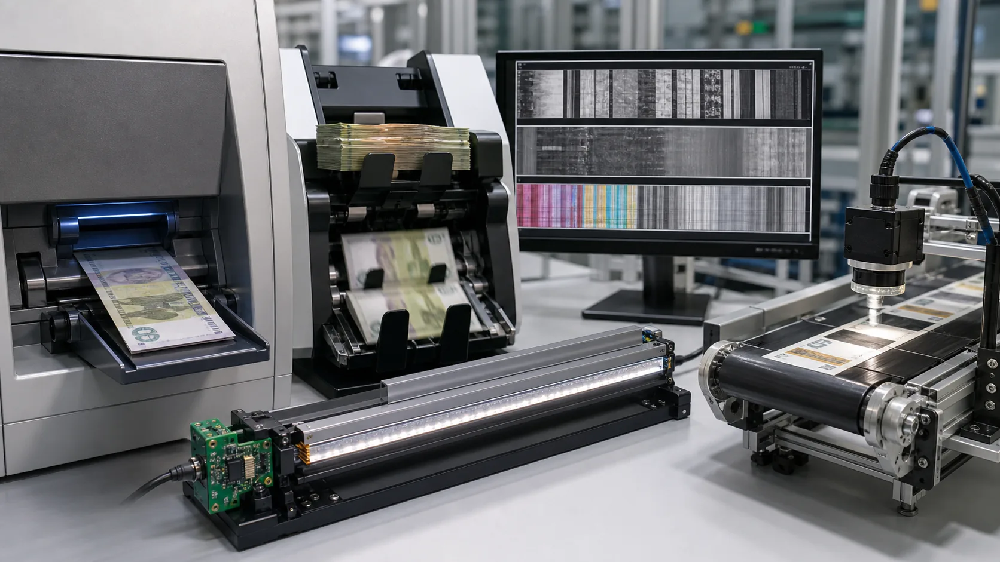
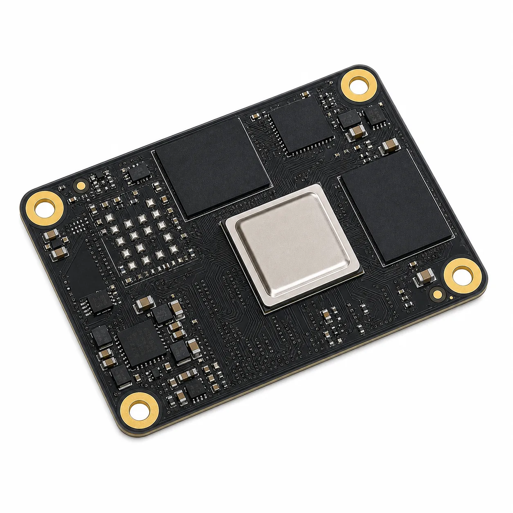

FPGA & EMBEDDED SYSTEMS
FPGA 기반 고속 센서와
실시간 데이터 처리 시스템
CIS 라인스캔, 정밀 타이밍 계측, Zynq/MPSoC 시스템의 아키텍처 설계부터 FPGA 구현과 보드 Bring-Up까지 지원합니다.
Engineering Capability
센서 입력부터 실시간 처리까지 연결합니다.
단일 IP 구현에 그치지 않고 센서 인터페이스, FPGA 데이터 경로, SoC 소프트웨어와 보드 검증을 하나의 시스템 관점에서 검토합니다.
What We Deliver
프로젝트 조건에 맞춰 범위를 정합니다.
요구사항 검토 후 RTL, FPGA IP, 펌웨어, 인터페이스 검증, 기술 교육 중 필요한 범위를 제안합니다.
Architecture처리량, 지연시간, 메모리와 인터페이스 구조 검토
ImplementationRTL, Custom IP, 펌웨어와 데이터 경로 구현
Bring-Up보드 초기 구동, 계측 기반 인터페이스 검증과 디버깅
Products
제품 라인
검증된 기술 경험을 기반으로 고객의 센서, 인터페이스, 처리 성능과 시스템 조건에 맞는 컨설팅·개발·교육 범위를 검토합니다.

TDCFPGA 기반 TDC 모듈
- 기본 16채널
- 다이나믹 동작 시 수십채널 가능
- 거리 분해능 4mm
- USB2.0, 이더넷 100/1000Mbps, UART, CAN

CISCIS 기반 모듈
- 지폐계수기, 투표장치
- 공장 라인스캔센서
- CIS 기반 영상인식이 필요한 모든 고속 장치
- R/G/B/IR/UV 조명

SoMZM4/ZM4MPSoC SoM 모듈
- Zynq7000 / ZynqMPSoC
- DDR3/DDR4L
- 32 MB QSPI Flash
- 0°C ~ 65°C 동작
- 고객 맞춤형 사양 가능
Engagement Process
사양 확인부터 검증까지 단계적으로 진행합니다.
제품과 개발 프로젝트 모두 초기 조건을 먼저 확인하고, 합의된 범위와 산출물을 기준으로 진행합니다.
센서, 보드, 인터페이스, 처리량, 지연시간과 일정 확인.
FPGA·SoC 분할, 데이터 경로, 개발 범위와 확인 항목 정리.
RTL·펌웨어 구현과 보드 단위 인터페이스 구동.
파형, 데이터 무결성, 성능 조건을 확인하고 결과를 정리.
공개된 수치는 대표 구성 기준이며, 최종 사양과 제공 범위는 센서·보드·동작 환경 및 검증 조건에 따라 협의합니다.
Contact
목표 사양과 개발 조건을 보내주세요.
센서와 인터페이스, 목표 처리량, 보드 조건, 일정이 있으면 개발 가능 범위와 우선 확인 항목을 정리해드립니다.
개발·제품·교육 문의
문의 유형: FPGA 시스템 컨설팅·개발, 교육 및 강의, TDC, CIS 적용.
문의 전 준비 자료
- 교육: 현재 수준, 필요한 과정, 팀 규모, 일정
- 개발/제품: 목표 스펙, 센서·보드 조건, 인터페이스, 전체 다이어그램
whjeong@maduinos.com